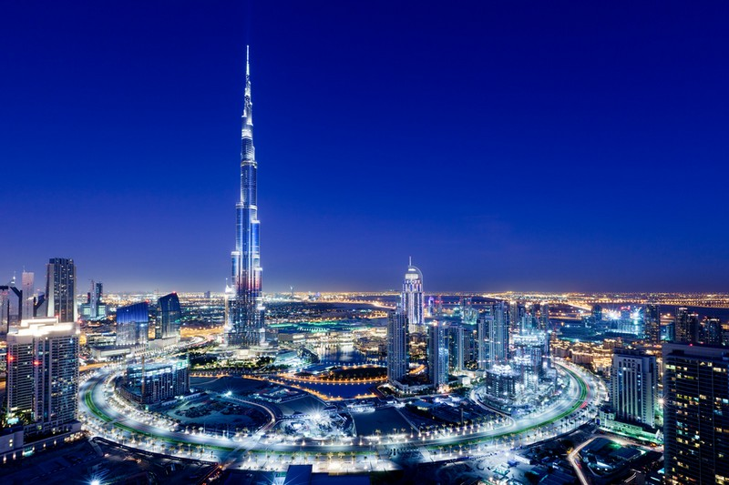
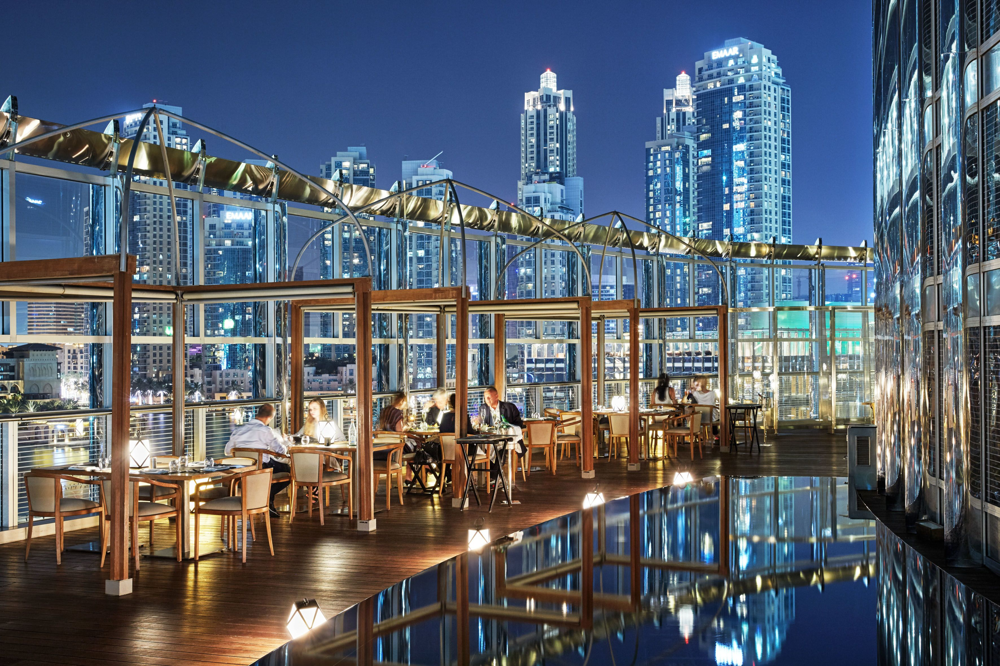
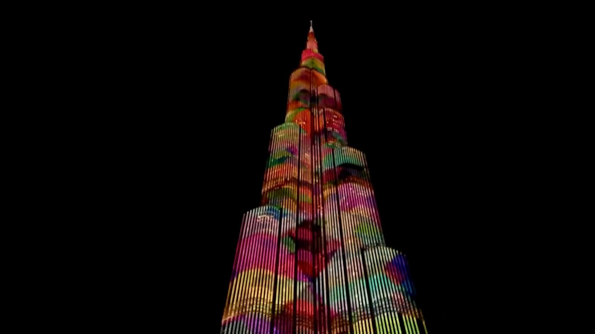
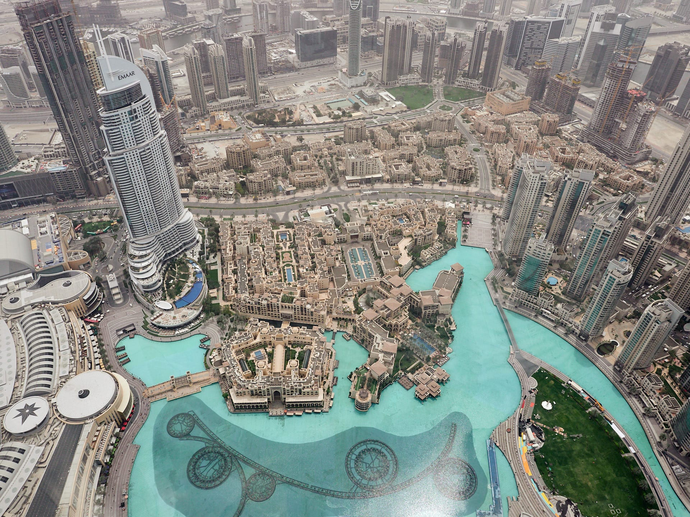

Burdż Chalifa - Najwyższy budynek świata

Burdż Chalifa to najwyższy budynek świata, zlokalizowany w Dubaju. Ma 828 metrów wysokości, a na 163 piętrach znajduje się mieszanka luksusowych apartamentów, biur oraz hoteli.
Jego budowa rozpoczęła się w 2004 roku, a ukończono go w 2010.
Architektura budynku została zaprojektowana z myślą o funkcji, ale jednocześnie wprowadzono szereg estetycznych rozwiązań, które czynią go jednym z najpiękniejszych drapaczy chmur na świecie. Widok z najwyższego tarasu widokowego jest spektakularny.
Dane techniczne:
| Wysokość | Piętra | Rok ukończenia |
|---|---|---|
| 828 m | 163 | 2010 |
Galeria


